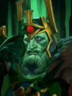

Not in the normal shop. This is one of the “spare” Undead pieces: you mainly get it when a piece holding an Ascetic's Cap is reborn as a random Undead, or through Pandaren fishing.
Reincarnation
Aura
Grants deathrattle to all nearby allies whose level is no more than Wraith King: Reincarnation once directly on death.
| ★ | ★★ | ★★★ | |
|---|---|---|---|
| Aura Radius | 250 | 300 | 400 |
| Lifetime | 10 | 15 | 20 |
- Non-permanent pieces cannot reincarnate. And pieces after reincarnation will be non-permanent pieces.
Conspirators against the Wraith King wonder why he never stays dead.
Stats
| ★ | ★★ | ★★★ | |
|---|---|---|---|
| Health | 1300 | 2600 | 5200 |
| Mana | 0 | 0 | 0 |
| Armor | 10 | 10 | 10 |
| Magic resistance | 20% | 20% | 20% |
| Attack damage | 150–200 | 300–400 | 600–800 |
| Attack interval (s) | 1.7 | 1.7 | 1.7 |
| Attack range | 205 | 205 | 205 |
| Move speed | 500 | 500 | 500 |
 Undead · Plague
Undead · Plague
- (3) All non-Undead pieces on the board lose 10% max HP.
- (6) They lose another 30% (-40% total).
- (9) Plagued pieces also lose 5% max HP every 2s, down to a minimum of 5% of their base max HP.
 Warrior · Fortified Armor
Warrior · Fortified Armor
Below 50% HP, Warriors get double the armor from Fortified Armor.
- (3) Warriors get +3 armor, doubled to +6 below 50% HP.
- (6) Warriors get another +12 armor: +15 in total, or +30 below 50% HP.
- (9) All allies reflect pure damage equal to 1.5x their current armor every time they take physical or magical damage (3x below 50% HP).